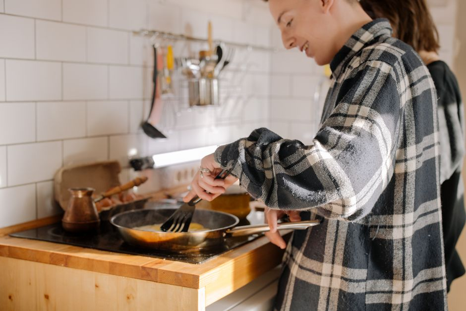

Formas económicas de preparar comida rápida para estudiantes
Para muchos estudiantes, el equilibrio entre economía y rapidez en la preparación de comidas puede ser un desafío. Sin embargo, con un poco de creatividad y planificación, es posible ahorrar dinero y disfrutar de comidas deliciosas y nutritivas en poco tiempo. Aquí te presento cinco formas económicas de preparar comida rápida.

Photo: cottonbro studio / Pexels
1. Comida en porciones individuales
Preparar comidas en porciones individuales no solo ahorrará tiempo, sino que también será económico. Solo necesitas un poco de planificación y unos cuantos recipientes de aluminio para cocinar en porciones. Por ejemplo, puedes preparar una gran cantidad de ensalada de lentejas y dividirla en 5 recipientes individuales para el almuerzo durante la semana. Cada porción costará menos de 1 euro y te durará todo el día. En frío, incluso puedes guardarla para la cena del mismo día.
2. Cocinar a lo lento
La cocineterapia a lo lento (slow cooker) es una excelente opción para los días de estudio intensivo. Solo necesitas echar todos los ingredientes en la mañanita y puedes olvidarte de ella hasta la hora de comer. Por ejemplo, puedes preparar una sopa de calabaza en solo 50 céntimos y cocinarla durante 8 horas. Solo es necesario cortar la calabaza, añadir agua, sal y especias al slow cooker y olvidarte de ella. Al final del día, tendrás una sopa nutritiva y sabrosa.
3. Utilizar ingredientes en oferta
Los supermercados suelen tener ofertas semanalmente. Aprovecha estas ofertas para comprar productos que puedes almacenar fácilmente, como legumbres, arroz y quinoa. Por ejemplo, puedes comprar 1 kg de lentejas a 1 euro y cocinar 200 g para cada comida. Esto no solo ahorrará dinero, sino que también te dará suficientes porciones para varias comidas.
4. Preparar comida en lote
Preparar comida en lote te permitirá ahorrar tiempo y dinero a la vez. Por ejemplo, puedes preparar una gran cantidad de risotto de arroz en un día y luego dividirlo en porciones para el resto de la semana. Cada porción costará alrededor de 30 céntimos, lo que es económico y te dará varias comidas para el almuerzo. Solo necesitas un poco de tiempo inicial para preparar todo, pero luego tendrás comidas listas para calentar.
5. Hacer tus propias conservas
Las conservas caseras son una excelente manera de ahorrar dinero y tener comidas frescas durante todo el año. Solo necesitas un poco de tiempo y algunos frascos para hacer conservas de frutas, verduras o salsas. Por ejemplo, puedes hacer una mezcla de tomates, cebolla y ajo para hacer salsa de tomate casera. Esto no solo costará alrededor de 50 céntimos, sino que también te dará una base para hacer numerosas comidas.
En resumen, la clave para preparar comidas rápidas y económicas como estudiante es la planificación y la creatividad. Con un poco de tiempo y esfuerzo inicial, podrás ahorrar dinero y disfrutar de comidas deliciosas y nutritivas.